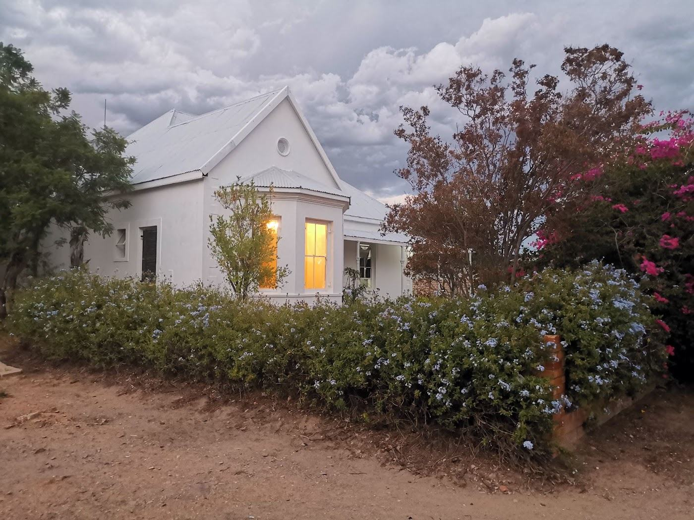
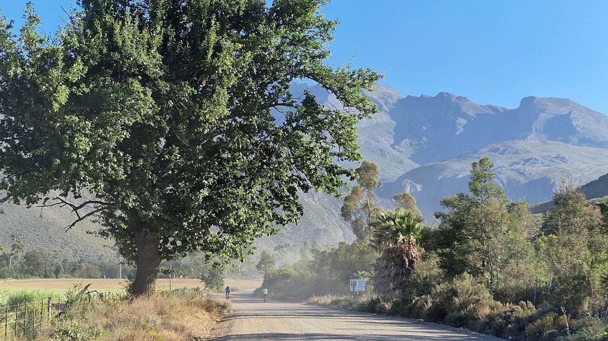
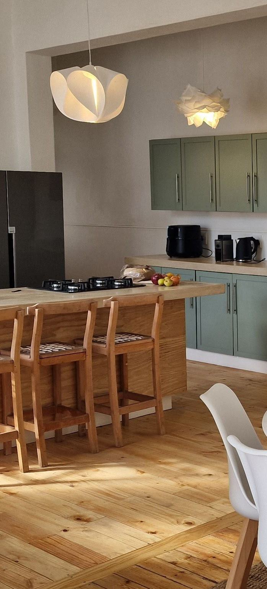

A restored Victorian home in the heart of Ladismith, made for riders and curious travellers.



Relax in spacious en-suite rooms, share stories at the kitchen table or around the fire, and soak up the character of a working Karoo town.
Karoocible is ideal for riding groups, cycling weekends and intimate retreats.
Enquire about your stayEasy access to the Klein Karoo route network.
Bike storage and maintenance space.
Solar and battery backup plus water storage.
High-speed internet and work desks.
Five en-suite rooms plus a studio, for up to 12 guests.
Fully equipped kitchen, dining space and braai area.
The house is located at 49 Church Street in Ladismith, close to the roads toward Rooiberg Pass, Seweweekspoort and Hoeko Valley.
Book your Karoo base or ask us about a fully supported tour.